Embed Partner Onboarding v 2.0¶
Tip
Your feedback is valuable and is vital in improving our product and documentation. Send suggestions to acrobatsignembed@adobe.com.
To smoothly integrate and onboard to Acrobat Sign, partners must complete a one-time setup.
If you have sandbox access, we recommend starting by onboarding to the sandbox environment. This allows you to practice and confirm your ability to create accounts in Acrobat Sign, add users to these accounts, and utilize Sign through the REST v6 APIs.
Once you feel confident with the new Embed 2.0 APIs, you can then move forward with onboarding to the production environment. The steps for onboarding to the sandbox and production environments are similar.
Set up Parent organization¶
Create Parent organization¶
Adobe initiates the organization setup process as follows:
You provide the name and email address of up to two administrators to your Product Success Manager.
Adobe creates your organization within the Admin Console, adds your admin contact information, and assigns global and system admin roles.
When the process completes, your admin(s) receive 2 invitation emails: one each for the Admin and Global Consoles. If you don’t receive the emails you can access the admin consoles directly using the following URL’s:
Note
You can login to complete the setup once the Adobe team has setup your account.
Accept invite and access Adobe Admin Console¶
After Adobe creates your organization, the admin(s) must create an account with Adobe:
Admin user receives two emails.
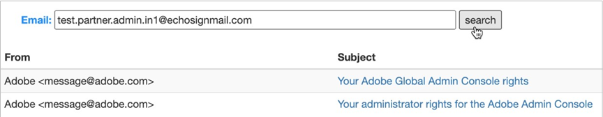
Open the invitation with subject “You administrator rights for Adobe Admin Console” and then select Get started.
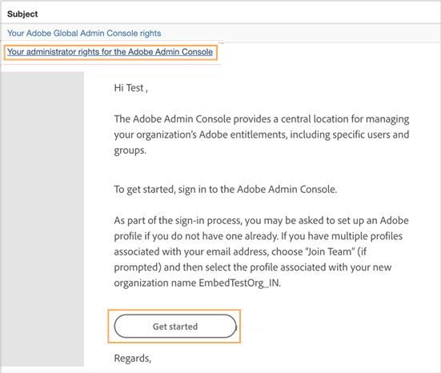Verify your identity.
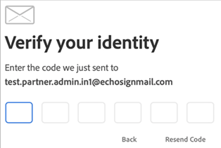Complete the account creation by setting up your admin account.
Claim domain¶
The admin must claim a domain and link it with a federated directory. It allows you to create users with the claimed domain and add them in Embed accounts.
- After you complete the account setup steps above, you land on the Admin Console page, as shown below.
Alternatively, you can log in to the https://adminconsole.adobe.com with the credential you created above.
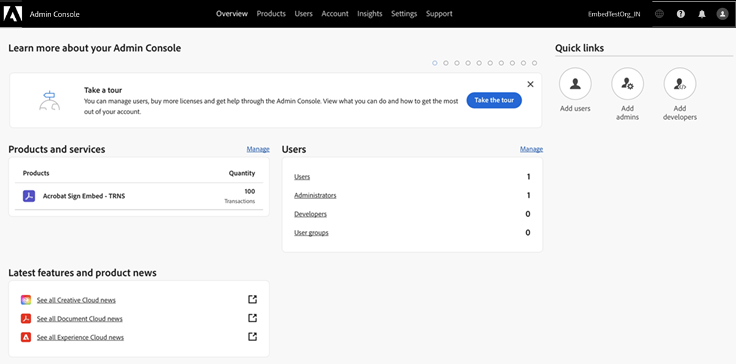
Go to Settings > Identity Settings > Domains.
Select Add Domain.
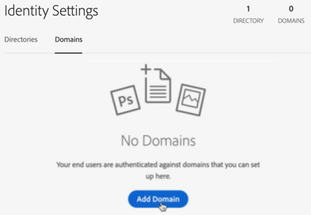
Specify a domain.
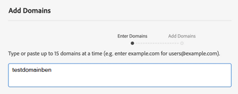Select Next.
Select Add Domains.
Select Validate.
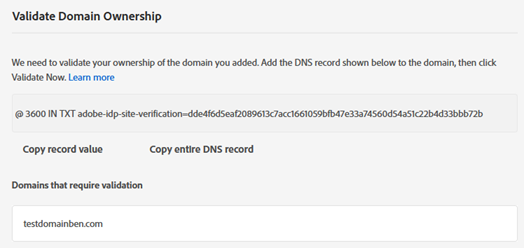
- Copy the key string.
Example key string:
@ 3600 IN TXT adobe-idp-site-verification=dde4f6d5eaf2089613c7acc16610593a74560d54a51c22b4d33bbb72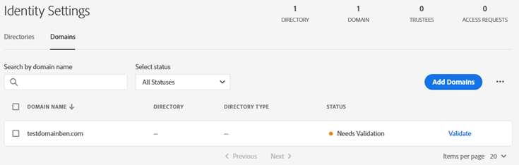
Validate your domain.
Note
It might take a while for the DNS change to fully go through, potentially up to an hour, before Adobe can confirm the ownership of the domain. If you get an error after adding the DNS settings, please wait and try again later. The web might not have updated the DNS settings yet.
After the domain claiming process completes, select Validate now.
Create a Directory and link with the claimed domain¶
If you are in a new session, you must re-login to the Admin Console.
Go to Settings > Identity Settings > Directories.
Choose Create Directory.
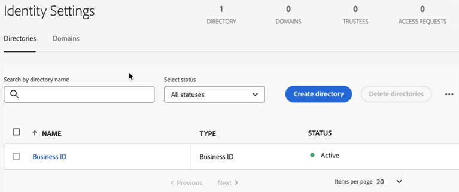
Enter a directory name.
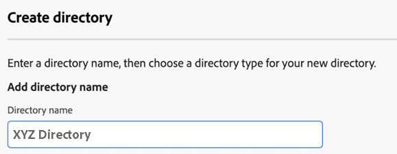Select the Directory type as Federated ID
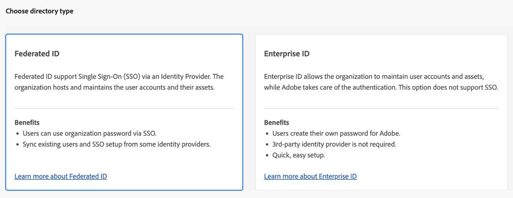Select Next.
As IDP setup is not required, select Cancel from the following screen. When you see the “Auto-account creation will be enabled” dialog, select Confirm.

Go to the Domains tab and then for your claimed domain, select Link Directory.
On the ‘Link a Domain and a Directory’ page, from the dropdown menu, select the directory created above and then select Link.
Create and configure Child organization¶
Create a Child organization¶
You can use the Global Admin Console to establish your organization hierarchy, assign products to your organizations, and review or submit changes. The child organization resides beneath the parent organization hierarchy. The child org is where you will Create a technical account and all the users for your customers. This hierarchy keeps your customer accounts and users separate from your company’s users.
Select the Global Admin Console icon on the Admin Console or go to https://global-admin-console.adobe.com/ and log in with your admin credentials.
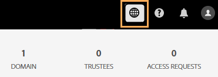On the global admin console page that opens, select the parent organization if it isn’t selected by default. Then, select Policies.
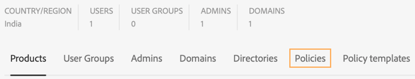From under the Policies tab, enable the Inherit system admins from parent when child organization is created option.
Allowing this setting before creating the child org will automatically add the administrators of the parent org as administrators of the child org when the child org is created. Administrators will not be inherited from the parent org for any child org created before this setting is allowed.
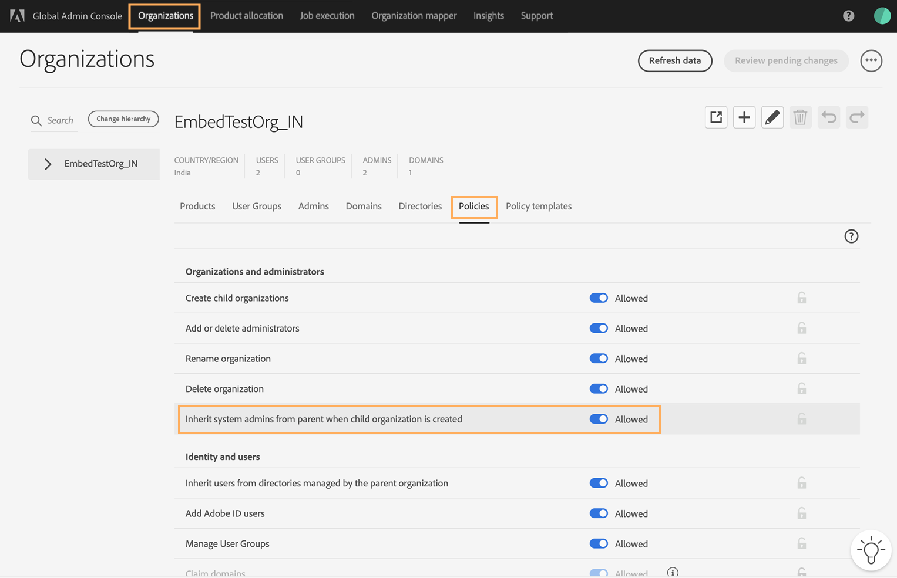From the upper-right corner, select Review pending changes. Wait for the Job Completed Status.
From upper-right corner of the Job Execution and History page, select Submit changes.
Select the Organizations tab and then select the plus icon to create a child organization.
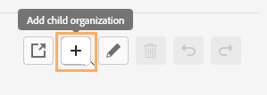Enter a child organization name, specify a country or region, and then select Save.
The selected Country/Region determines the region for which the technical account is provisioned on Acrobat Sign.
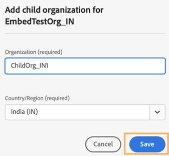Select Review pending changes and then select Submit changes to apply the changes.
Select Organizations tab and then review the Admins and Domains section of the Child Org to ensure that the administrators and domains have been inherited as expected.
Allocate transactions to the Child organization¶
After creating the child organization, you must assign the Acrobat Sign Embed product to it. This step is essential for enabling the child org and the upcoming technical account to access Acrobat Sign Embed features, including Sign Embed and Acrobat Sign APIs. When assigning the product, make sure to allocate at least one transaction to the child org.
Tip
The allocation count assigned to the child organization doesn’t limit the number of transactions permitted for the users within this organization.
From the top bar, select Product allocation.
From the drop-down menu, select Acrobat Sign Embed - TRNS and then select the Sign Transactions (transactions) tab.
From under the ‘Grant’ column, select the plus icon for the child organization you just created.
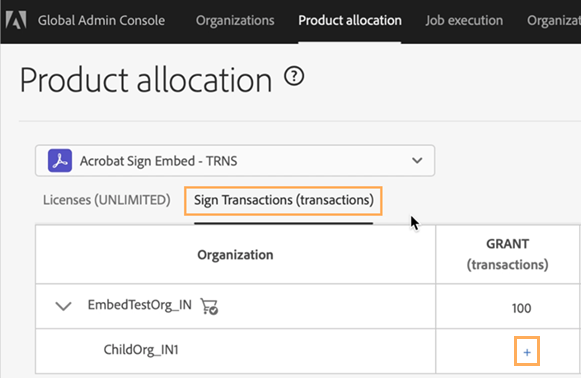
Allocate at least 1 transaction of the Acrobat Sign Embed product and then select Save.
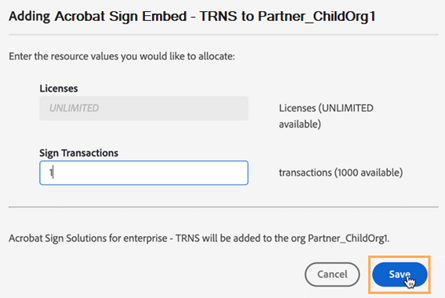From the upper-right corner, select Review pending changes and then select Submit changes.
Select Organizations tab and review that Products have been allocated to the Child Org.
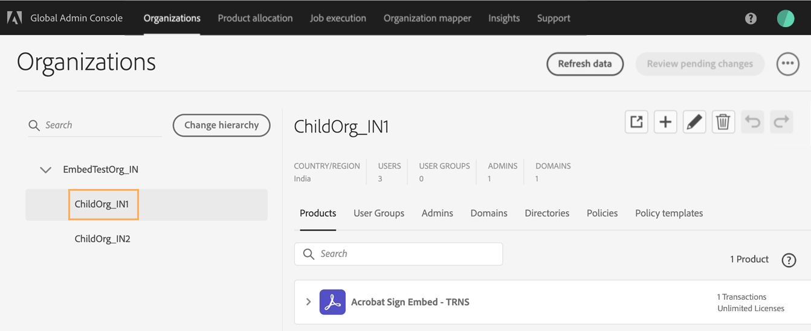
Verify your configuration as follows:
Admin user receives a welcome email with subject “Your administrator rights for the Adobe Admin Console for the [your] Child Org”.
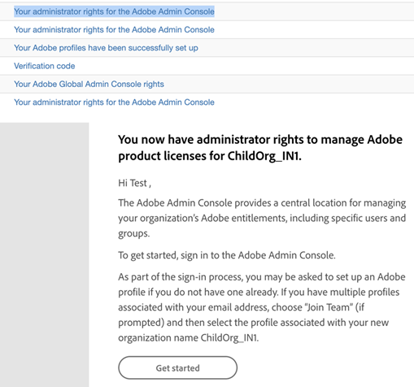Select Get Started.
On the dialog that opens, enter the password and then select Continue.
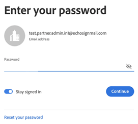Select Join team.
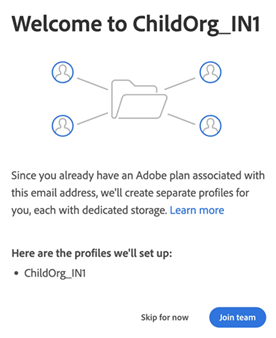Select the Child Org profile to sign in.
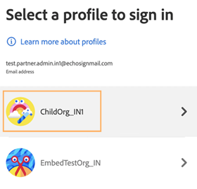On the admin console with child Org profile, validate the profile and also the product and transactions allocated.
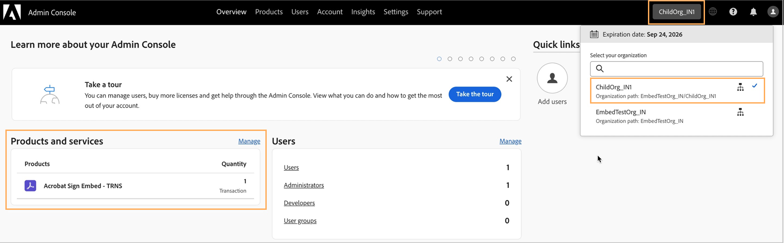
Create a technical account¶
As part of the Partner onboarding process, a Technical Account (developer console account) must be created. This specialized service account is essential for generating the technical account token, which serves as the Partner’s authentication credential for engaging with Acrobat Sign. The technical account token is utilized to initiate customer provisioning APIs at both the account and user levels, as well as to generate tokens for customer users.
Note
The following steps require system admin privileges. The child organization may have users with developer role, but only admin users have access to add the requisite API SDKs.
After you log into the admin console with the Child Org profile, select the Products tab.
From next to the ‘Acrobat Sign Embed - TRNS’ listing, open the 3-dot icon menu and then select Go to Developer Console.
It redirects you to profile selection page of the developer console.
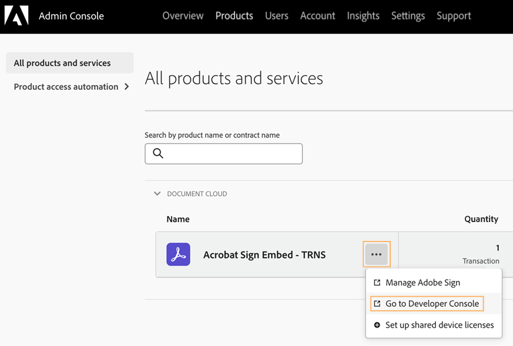Select the child Org profile you created above. It prompts you to accept the Adobe Developer Terms of Use.
On the Developer console home page that opens, select Create New Project.

Select Add API.
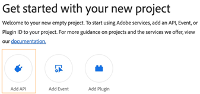- Select Acrobat Sign Embed API SDK.
It provides the partner with privileges to call the Sign Embed service APIs, create Acrobat Sign accounts, and add users.
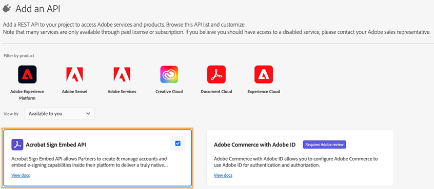
Select Next.
Select OAuth Server-to-Server and select Next.
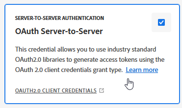
Select Product profiles and select Save Configured API.
Select Add to Project > API.
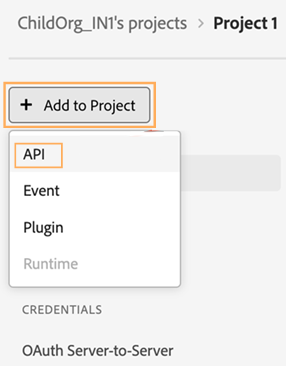
Repeat the steps above for the User Management API. This SDK provides admin console access for user creation via the API.
Verify that the Project contains both the above mentioned SDKs.
Generate Technical Account Token via UI or via curl command¶
- From under the Credentials section in the left panel, select OAuth Server-to-Server.
From here, you can get all details of the technical account like client id, client secret, scope, and more.
Select Generate access token to create Technical Account token. A screen appears with the requisite developer details, as shown below.
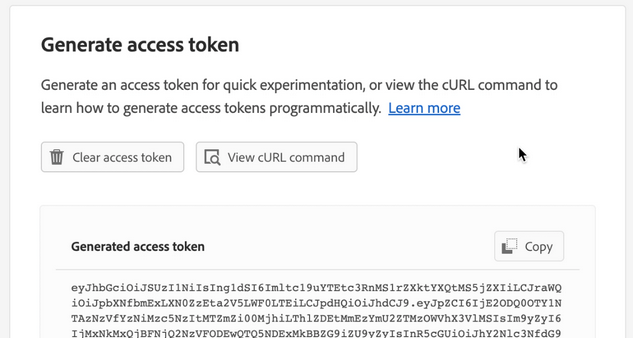
Note
The technical account token generated has a default validity of 24 hours. You can also use the curl command to generate the token. To get the curl request, select View cURL command.
Register the partner on Acrobat Sign¶
Call the Sign GET BaseUris API¶
Call the Sign GET BaseUris API using the Technical Account token. Partners are required to use the value of the “apiAccessPoint” obtained from the API response as the base URL for all API calls.
Call the register Partner API¶
You can now use your technical account token to register with Acrobat Sign via the register partner API. You must use the Register API to register your application in both production and sandbox.
Provide account info to Adobe¶
Once the above steps are complete, provide the “Partner ID” to your Product Success Manager to complete the rest of the configurations.
Your Product Success Manager will establish a Channel and incorporate your technical account into it. If you have sandbox access, they will assist in activating your application in the sandbox environment, enabling you to utilize Sign Embed services there. However, note that full access to the Acrobat Sign Embed services in the production environment requires formal certification of your application by Adobe.
Note
Before using Acrobat Sign Embed services in production, your application must undergo formal certification by Adobe. Once your development is complete, you collaborate with your Product Success Manager to get your application certified.
Onboard your customers¶
Once your Partner Application is certified, you can use the Acrobat Sign Embed APIs to create customer accounts, add users, and generate user tokens.